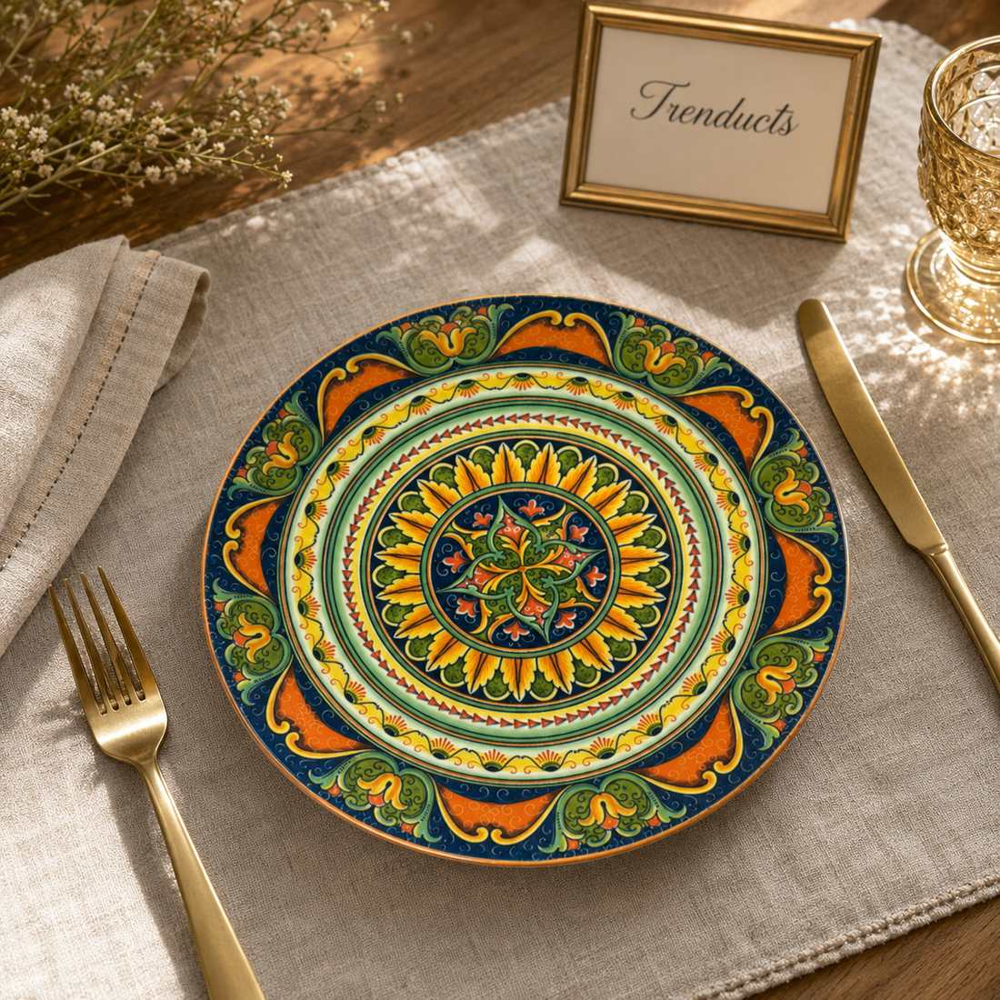
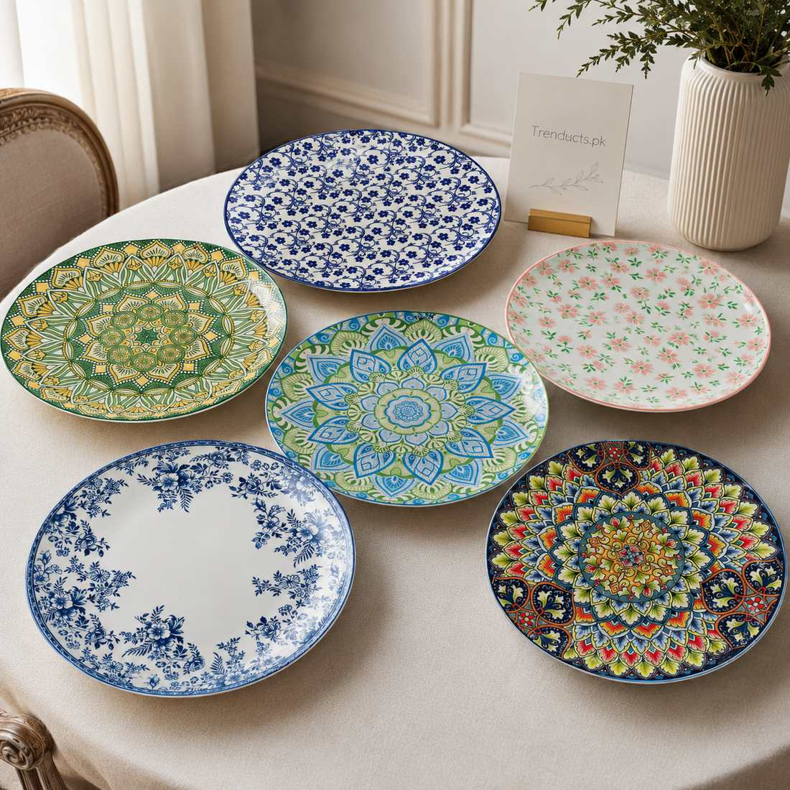

Wedding season in Pakistan runs mostly through the cooler months, from October to March, and many families attend several weddings in a single winter. The question of what to gift comes up again and again. Cash envelopes, salami, are common, but close relatives and friends often prefer to give something lasting. Dinnerware has been a favourite for decades because it ends up at the centre of family life, from the first dawat the couple hosts to Eid lunches years later.
Choosing the right dinnerware is not always easy, though. Tastes have changed, homes are smaller, and the couple may already receive three full dinner sets as part of the jahez. This guide helps you pick something they will love and use.
Find out what they already have
Before buying, ask quietly through a sibling or a close friend. Many brides receive a large dinner set from their parents. If that is the case, a second full set will end up boxed in a store room. Instead, think about pieces that complement it: quarter plates, a cake serving set, dessert bowls, or a statement serving platter. These fill real gaps and are just as appreciated.
Pieces that make great gifts
Some items work for almost every couple:
- A set of quarter plates for snacks, sweets and tea time
- A glass or ceramic cake serving set with a stand and small plates
- Large dinner plates in a distinctive retro or Turkish style
- Serving dishes for rice and curry with matching lids
- A decorative platter for fruit, kebabs or mithai
Handmade or irregular glass pieces feel especially special because no two are exactly the same.
Match the style to the couple
A young couple moving into a flat in DHA or Bahria Town might love modern matte finishes, bold colours or minimal white pieces. A couple living in a joint family home may prefer classic designs with gold rims that suit traditional dawats. If you know their wedding colours or home decor, use that as a guide. When in doubt, choose white, cream or clear glass, which work with everything.

Budget guide
Dinnerware gifts can suit any budget. Around three to five thousand rupees buys a beautiful set of quarter plates or a pair of statement dinner plates. Eight to twelve thousand covers a quality serving set or cake set. Above fifteen thousand, a premium handmade collection makes a memorable gift from a group of friends or cousins who pool money together. You can see current options and prices on https://www.trenducts.pk/collections/dinnerware before deciding.
Practical things to check
Beautiful plates are useless if they are fragile or hard to clean. Check whether the pieces are microwave safe, because reheating is part of daily life. Ask whether they are dishwasher safe, though most Pakistani households still wash by hand. For glass, thicker pieces survive everyday use better. Look at the weight, too: very heavy plates are tiring to serve with at large gatherings.
Packing and presenting
Dinnerware is fragile, so presentation needs care. If delivering yourself, keep the original packaging and add a ribbon and a card on top. Write a short, warm message wishing the couple many happy meals together. If ordering online for delivery to the couple's home, confirm that the seller packs fragile items properly and that the delivery date falls after the wedding rush, when the couple is settled.

Timing your gift
In Pakistan, gifts are often given at the walima or brought to the couple's home in the weeks after the wedding. Giving dinnerware after the main events is actually practical, because the couple will not have to carry it from the venue among dozens of other gifts. A visit with your gift a week or two later also gives you a chance to sit and chat when the rush is over.
Final thoughts
A thoughtful dinnerware gift outlives almost everything else from a wedding season. Find out what the couple already has, choose pieces that fill gaps, match their style, and check practical details. Years from now, when they serve guests on your plates, they will remember the day you gave them.